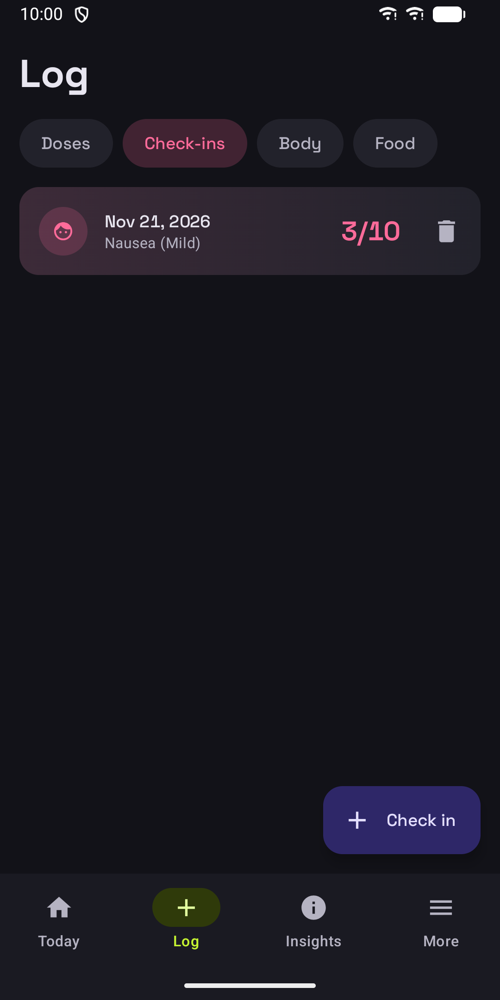
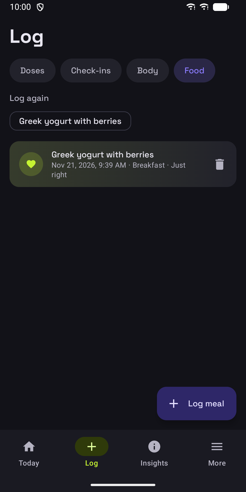

GLP Mate: diario de GLP-1
Diario privado de GLP-1: dosis, efectos secundarios, peso, comida, reservas.





Acerca de la app
GLP Mate es un diario privado para personas en tratamiento con GLP-1, como semaglutida, tirzepatida o liraglutida, ya sea con plumas, pastillas o viales de fórmula magistral. Todo lo que anotas se queda en tu móvil, en una base de datos cifrada. Sin cuenta, sin anuncios y sin rastreo. INYECCIONES Y DOSIS Añade uno o varios medicamentos, cada uno con su propia pauta: semanal, diaria o cada pocos días, a la hora que elijas. Registra cada dosis con hora, cantidad en mg, zona de inyección, dolor, número de lote y una nota. La app te sugiere la siguiente zona según tu propio orden de rotación. El plan de dosis puede rellenarse a partir de la ficha técnica, y tú lo confirmas o lo cambias. GLP Mate nunca recomienda una dosis. RECORDATORIOS Recibe un aviso cuando toca la inyección, con botones para registrarla o posponerla. Opcionales: registro diario por la tarde, agua y reservas. Los textos son discretos y nunca aparecen en la pantalla de bloqueo. REGISTRO DIARIO Puntúa el ruido mental sobre la comida de 0 a 10 y, si quieres, hambre, saciedad, ánimo, energía, sueño y tránsito intestinal. Anota 13 efectos secundarios habituales o los tuyos propios, como leves, moderados o graves. Si registras vómitos fuertes o dolor abdominal fuerte, la app te muestra un aviso claro para que contactes con un médico. CUERPO Peso con media de 7 días, medidas corporales, IMC y un rango objetivo. COMIDA Y AGUA Anota comidas con proteína, fibra y calorías opcionales, repite tus comidas favoritas con un toque y fija objetivos diarios de proteína, fibra, agua y pasos. RESERVAS Controla cada pluma, vial o caja. Las dosis registradas se descuentan del que estás usando, y recibes un único aviso cuando te queda poco o algo está a punto de caducar. HOY Y ESTADÍSTICAS Hoy muestra tu próxima inyección, una lista diaria y lo que viene. Estadísticas muestra tu peso de hasta los últimos 3 meses con los cambios de dosis. Cada gráfico puede verse también como tabla. Las insignias premian registrar con constancia, nunca los kilos perdidos. HEALTH CONNECT Si quieres, lee peso, grasa corporal, masa magra y pasos de Health Connect, y guarda allí el peso y el agua que anotas en la app. PARA TU MÉDICO Crea un informe PDF claro para cualquier periodo y compártelo como quieras, o exporta todos los registros en CSV. PRIVACIDAD Y COPIAS DE SEGURIDAD La clave de la base de datos está protegida por el Android Keystore. Un bloqueo opcional usa tu huella, tu cara o el bloqueo de pantalla. Crea una copia cifrada con tu propia contraseña, activa una copia semanal en la carpeta que elijas o una copia nocturna en una carpeta oculta de tu propio Google Drive, cifrada antes en el móvil. Sin analítica, nada se envía al desarrollador, y un botón borra todos los datos. PREMIUM (OPCIONAL, PAGO ÚNICO) Todos los registros, recordatorios, copias de seguridad y el informe médico básico son gratis. Una única compra dentro de la app, sin suscripción, añade: nivel estimado del medicamento por principio activo, ruido mental y hambre por días desde la inyección, un mapa de efectos secundarios, gráficos de peso de 6 meses y de todo el historial, fotos de progreso cifradas con comparación lado a lado y páginas extra en el informe. Disponible en español, inglés y alemán, con unidades métricas o imperiales. GLP Mate es un diario personal, no un producto sanitario. No da consejos médicos, no hace diagnósticos ni recomienda dosis. Las estimaciones y los gráficos son solo informativos. Sigue siempre las indicaciones de tu médico y el prospecto de tu medicamento.